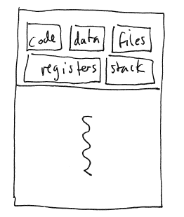
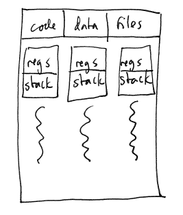
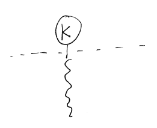
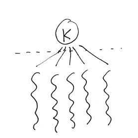
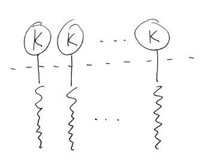
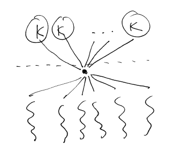

We have discussed processes, the basic model for running a program
in a private address space

In the basic process model, there is only one thread of control:
i.e., only one instruction is being executed at a time, and there is
only one program counter and set of CPU registers.
Threads are "Virtual CPUs". Each thread has its own program
counter and CPU registers. If a process contains multiple
threads, all of the threads run "at the same time" in the process's
address space.

Because threads run in a common address space, they can communicate
with each other using shared data structures.
Parallelism
When multiple threads are executed
simultaneously on multiple CPUs, they can cooperate to solve a problem
by each working independenty on part of the problem and then combining
their solutions. For example, a multithreading program running on
a machine with 8 processors might be able to solve a problem 6 times
faster than a single-threaded program running on a single processor.
GUI applications
GUI event loop:
while (true) {
event = WaitForEvent();
DispatchEvent(event);
}
Waiting for an event: waiting for the
user to press a key, click the mouse, etc.
Dispatching the event means finding the
handler code for that event.
For example, the handler code which is
called when a particular button is pressed
If the handler is long-running (render a
ray-traced scene, read from a network socket), the GUI is frozen
waiting for the operation to complete
Therefore, long-running operations can be
run in a separate thread, allowing the GUI to continue responding to
events
Many of the same issues that arise in multiprogramming for processes
also arise for threads.
Each thread must have its own stack of activation records.
Each thread will have a thread context data structure that serves a
purpose similar to a PCB. E.g., the thread context will save the
thread's
registers when the thread is suspended.
A kernel thread, like the name suggests, is a thread that exists in
the kernel. The OS kernel is responsible for scheduling kernel
threads on the available CPUs.
Each process is associated with at least one kernel thread.
When a process makes a system call, the kernel code path (interrupt
handler, system call dispatch, and system call handler) is executed in
the context of the process's kernel thread.
The kernel may create some kernel threads internally that are not
associated with any process. These are kernel-only threads. They are
created to carry out tasks such as
In a preemptive threading model, a thread can be suspended at any
time. This is the same idea as the OS kernel assigning time
slices to processes and suspending a process when it has completely
used its assigned time slice.
In a cooperative threading model, a thread is only suspended in the
following situations:
In cooperative threading, a process that is using the CPU for long
periods can starve the other
threads so that they don't get a chance to run.
On a system with multiple processors and/or multiple CPU cores,
threads in the same process can assigned to multiple processors.
This
is parallel execution, and it
means that the threads are truly executing simultaneously.
On a system with a single CPU core, only one thread can be executing
at any given time. However, switching between the threads creates
the
illusion that they are running simultaneously. (This is the same
idea
as the kernel's timeslicing of processes.)
This is what happens when you have a single thread executing in the
process, and the process has a single kernel thread. It is the
degenerate case of threading.

All of the threads in a process are assigned to a single kernel
thread:

There is no possibility for parallelism in this model: even if the
system has multiple CPUs, only one thread in the process can be
executing at any one moment.
Interesting fact: in most operating systems, it is possible to
implement many-to-one threading without any assistance from the OS
kernel. Such an implementation is known as user-level threading.
Usually, user-level thread implementations are cooperative rather than
preemptive (although preemptive is possible).
Early versions of Java used this model ("green" threads).
Each thread in a process is assigned to a single kernel thread.

Parallelism is possible: each kernel thread can be scheduled on a
different CPU.
One criticism of this model is that each kernel thread requires
memory to be allocated in the kernel (to store the kernel thread's
context data structure and stack). For a process with thousands
of threads, this can be a real concern.
Windows and Linux both use this model.
Also known as m:n threading.
The process has a fixed number of kernel threads. The user
threads are scheduled on the kernel threads.

Parallelism is possible, with the maximum degree of parallelism
determined by the number of kernel threads.
Solaris uses this model.